05 / Cinema
Filmes
Favoritos
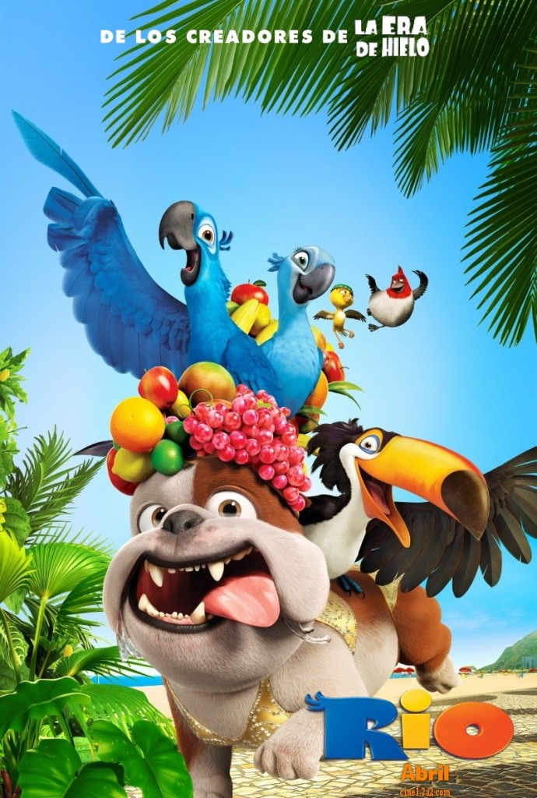
Rio
Comédia/Musical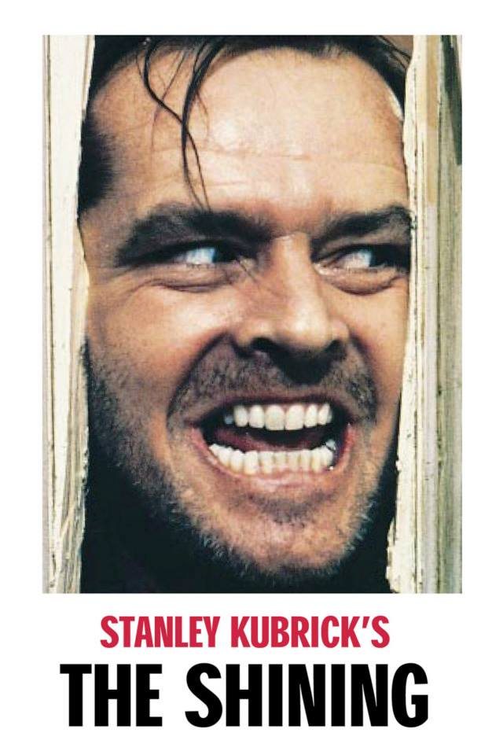
O iluminado
Suspense/Terror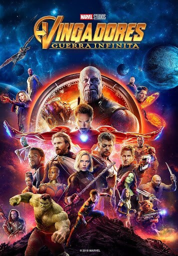
Vingadores Guerra Infinita
Ficção científica
— Eduzão —
01 / Quem é
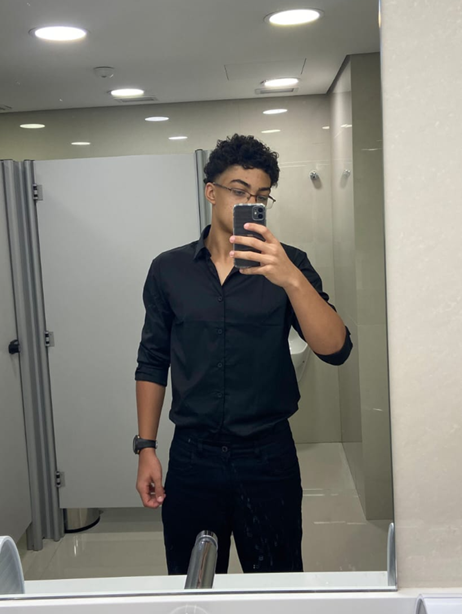
Instituto J&FSou o Eduardo e, neste ano, fiz parte do 1°G, turma cuja gestão foi conduzida pelo nosso professor Carlinhos.
Este ano foi muito especial para mim, pois realizei um sonho que carrego desde o 5° ano do Ensino Fundamental I: fazer parte da Germinare, atual Instituto J&F. Foram anos de preparação, dedicação e muito estudo até conseguir conquistar essa oportunidade. No dia 28 de janeiro, finalmente me tornei aluno da escola e comecei uma das etapas mais importantes da minha vida.
Logo nos primeiros dias, percebi que não seria fácil. Sempre fui uma pessoa muito tímida, e estar em um ambiente novo, com tantas pessoas e desafios, me fez perceber que precisava sair da minha zona de conforto. Tive medo de não conseguir acompanhar o ritmo das aulas, da dimensão do projeto interdisciplinar que teríamos que desenvolver e, principalmente, das aulas de inglês, que sempre foram uma das minhas maiores dificuldades.
Muitos dos meus medos poderiam se transformar em oportunidades de crescimento.
Ao longo do ano, entretanto, percebi que muitos dos meus medos poderiam se transformar em oportunidades de crescimento. O 1°G me ensinou a ser mais forte, independente e confiante. Conheci pessoas incríveis, construí amizades que espero levar para o resto da vida e vivi experiências que certamente farão parte da minha história. Entre essas pessoas, estão meus amigos do EcoCiente, que foram fundamentais para o desenvolvimento do nosso projeto. Juntos, enfrentamos dificuldades, compartilhamos ideias e transformamos aquilo que parecia impossível em uma realidade.
Além do crescimento pessoal e acadêmico, este ano também me proporcionou a realização de outro grande sonho: trabalhar com tecnologia. Hoje, sou estagiário do PicPay e tenho a oportunidade de colocar em prática aquilo que sempre tive vontade de aprender, além de descobrir novos caminhos para o meu futuro profissional.
Quando olho para trás, percebo o quanto mudei. Já não sou a mesma pessoa tímida que chegou à escola no início do ano. Aprendi a me comunicar melhor, a assumir responsabilidades, a trabalhar em equipe e, principalmente, a enfrentar situações que antes me assustavam. Sei que ainda tenho muito a melhorar, especialmente no inglês, mas hoje tenho mais confiança de que sou capaz de superar essas dificuldades.
Para o próximo ano, quero continuar evoluindo, enfrentando novos desafios e conquistando meus objetivos. Quero aproveitar cada oportunidade, aprender com meus erros, fortalecer as amizades que construí e me tornar uma pessoa cada vez melhor, tanto profissionalmente quanto pessoalmente.
Sair da zona de conforto pode ser assustador, mas também é o que nos permite descobrir do que somos capazes.
Se existe algo que levo deste primeiro ano, é a certeza de que sair da zona de conforto pode ser assustador, mas também é o que nos permite descobrir do que somos capazes. Tenho muito orgulho de tudo o que conquistei até aqui e muita vontade de descobrir o que ainda está por vir.
02 / O ano de 2026
Chegada ao Instituto J&F. Tudo novo — a escola, os colegas, o curso técnico. O começo de uma jornada.
InícioOs primeiros projetos em grupo, as primeiras risadas no intervalo, e eu começava a fazer parte da equipe Lutra (não existia o nome EcoCiente).
AmizadesTrabalhos interdisciplinares, primeiras linhas de código, apresentações em grupo. Crescimento visível.
CrescimentoPausa para recarregar as energias depois de um primeiro semestre intenso no técnico.
DescansoSegundo semestre: projetos mais complexos, mais responsabilidade, mais parceria com a turma. Primeiro emprego no PicPay como analista de dados.
EvoluçãoProvas, entregas, correria. Mas também a certeza de que o ano valeu — pelo aprendizado e pelas pessoas.
DedicaçãoDespedida dos que fizeram meu ano o melhor de toda a minha vida.
Celebração03 / Fun facts
Já fiz um curso de matemática na Universidade de São Paulo (USP).
Eu amo animais e sei de muitas curiosidades. Meu animal favorito é a arara-azul.
Duplique esse bloco pra adicionar quantas curiosidades quiser.
04 / Pelo mundo
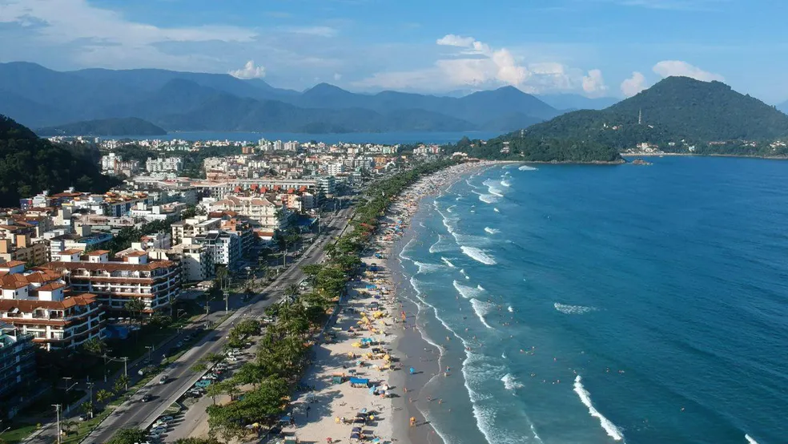
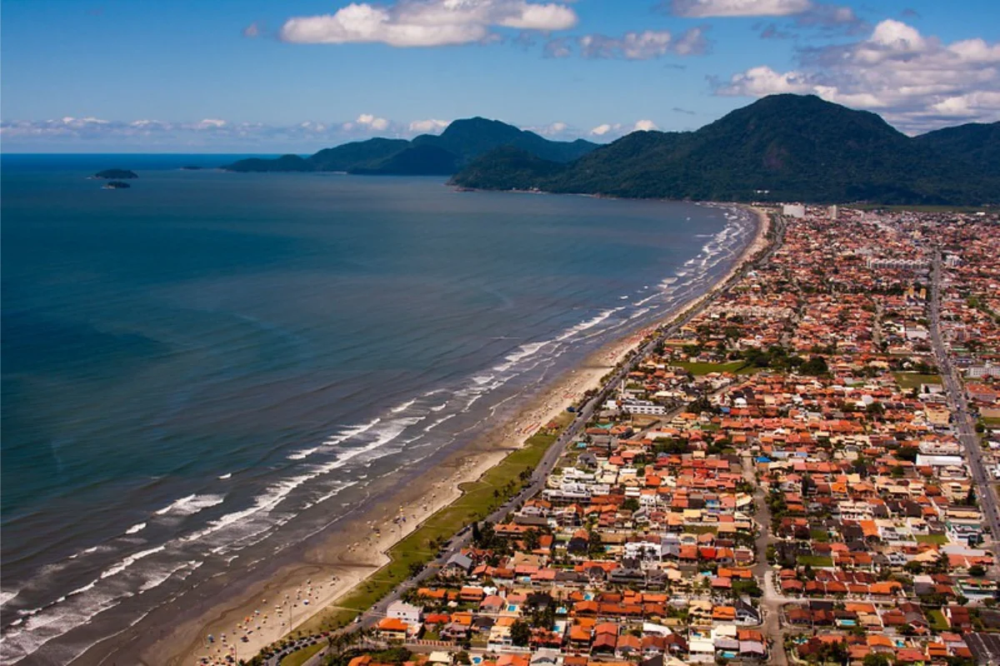
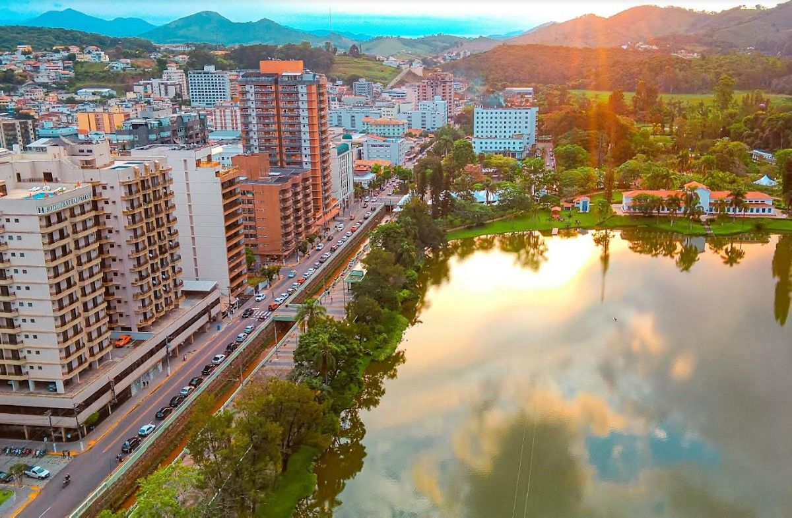
05 / Cinema



06 / Momentos
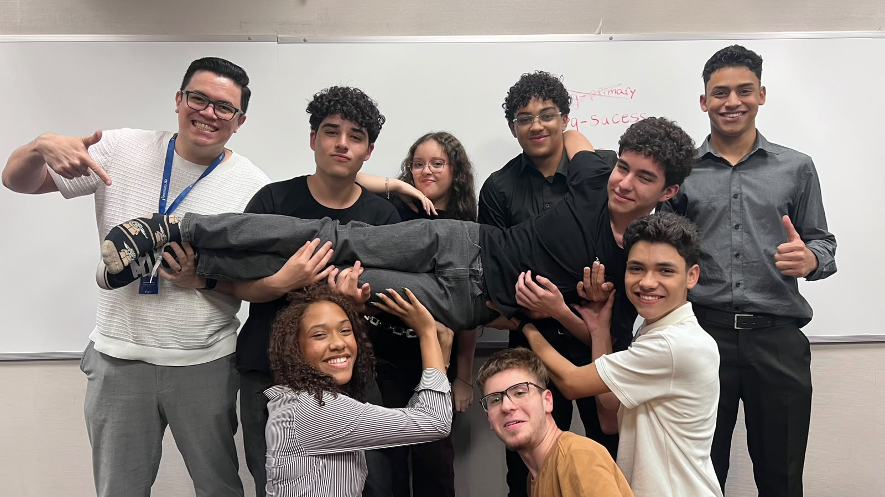
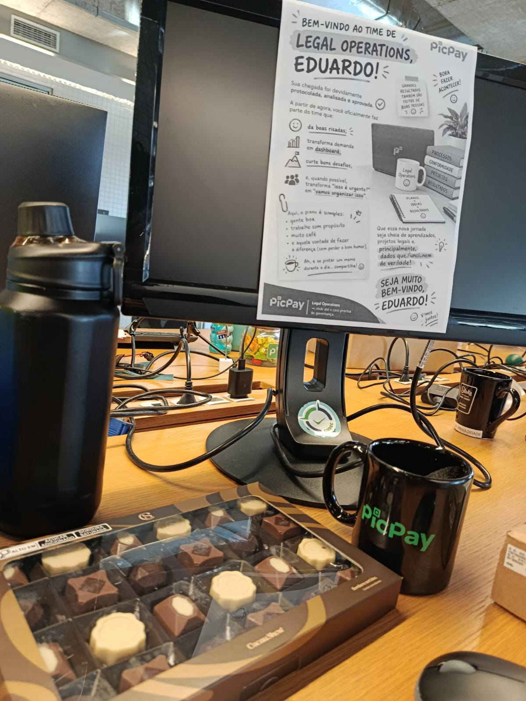
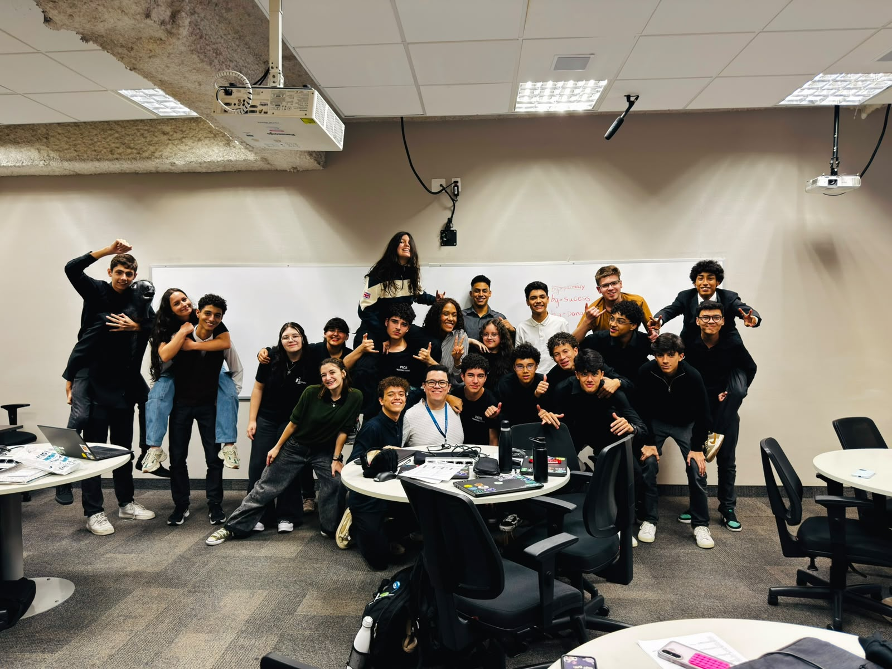
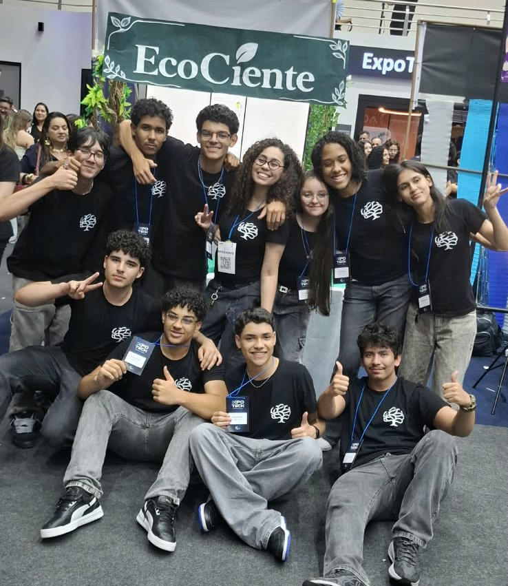